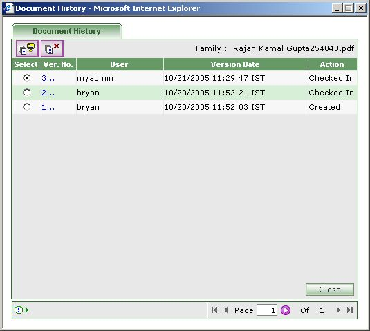

| How to Make Resume or Timesheet Versionable? |
- First select the resume or timesheet you would like to make versioned.
- Click on the 'Make Versionable' icon [ ].
- Successful making resume or timesheet versionable will give the message as
'The selected item is versioned' in the Task bar.
- The resume or timesheet name would now be followed with '(v)' implying that the item is now versioned .
- Please note that there is no explicit check out , check in and undo check out facility for versioned resume and timesheet.
- Whenever a versioned resume or timesheet is edited successfully, a new version is created as check out and check in is implicitly performed.
- This helps reducing the number of steps in creating a new version for a versioned resume or timesheet.
|
| |
| How to see History of versioned document? |
- First select the versioned resume or timesheet for which you would like to view history.
- Click on the 'Version History' icon [ ].
|
 |
- History page will be displayed with the versions.
- Press 'Close' to close the History.
- Click on the 'Version History detail' [ ] icon to view the detail of the selected version.
|